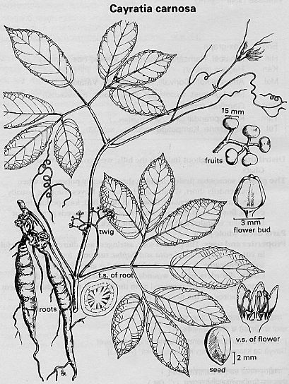

|
ECONOMICALLY
IMPORTANT PLANTS OF INDIA |
| Under-utilized Food and Fodder species and their wild relatives | Contributed by Ms.M.L Annapurna And Dr. Dhanapal, UAS, Bangalore |
Cayratia carnosa

Taxonomic
Details
----- Classification
----- Synonyms
----- Common Names
Other Biological Details
----- Habit and Habitat
----- Diagnostic Features
----- Reproductive Biology
---------- Breeding System
---------- Phenology
---------- Pollinators
---------- Seed Biology
----------Seed Germination
------ Cultivation
----- Major Pests and Diseases
Economic Potential and Uses
----- Parts Used
----- Uses
----- Harvesting Practices
----- Produce and Products
----- Chemistry
----- Processing Techniques
----- Other uses
----- Economic Potential to the
Country
----- Export Potential
Miscellaneous Information
Literature
Correct
Name :
Cayratia carnosa
Family : Vitaceae
Synonyms :
Common Names :
English:Castanopsis
Assamese:Hinguri.:
Bengali:Amal-lata
Malayalam:Sorivalli
Marathi:Ambat-bel
Hindi: Amal-bel
Gujarati:Khat
Telugu:Kampirtige,Kuruetinne.
Tamil:Katteppirandai.
Back
to Top
Availability :
India:Arunachal Pradesh,Andhra
Pradesh,Karnataka,Kerala,Tamil Nadu,Diu & Daman,Goa,Gujarath,Maharashtra.
Malyasia,Myanmar,Srilanka.
Status :
Pollinators:
Seed Biology :
Seed Germination:
Cultivation:
MAJOR
PESTS & DISEASES
Pests:
Diseases:
Parts
used:
Leavea,Fruits.
1. Young leaves and fruits are edible.
Harvesting
Practices
Produce and Products
1. Plants for Human Consumption In India,Botanical Survey Of India,PP.43.
2 The wealth of India, A Dictionary of Indian Raw Materials and Industrial Products, Vol. II. C, Publications and Information Directorate, CSIR, New Delhi, India, 1950.